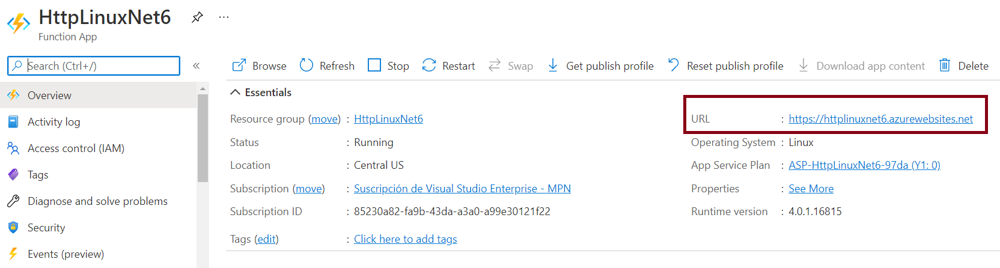
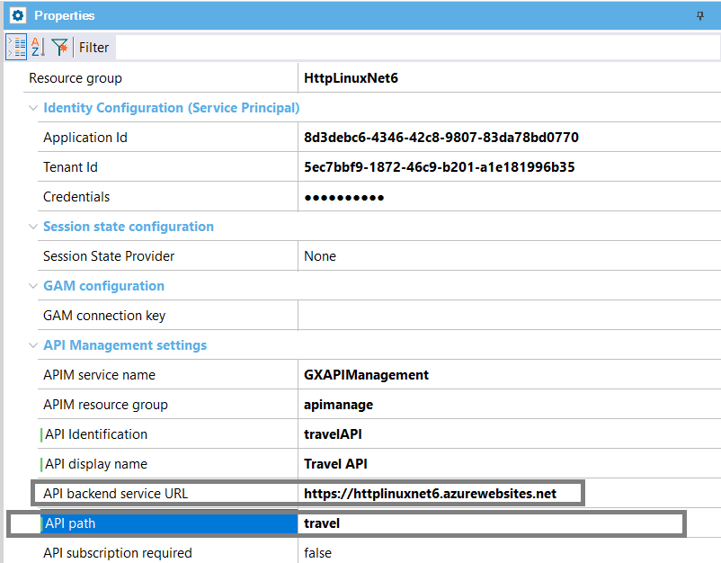
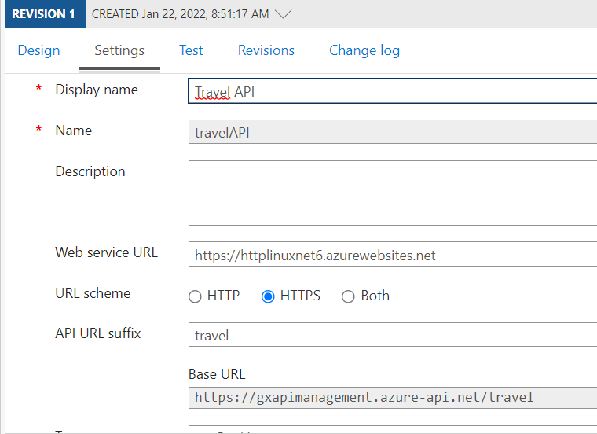
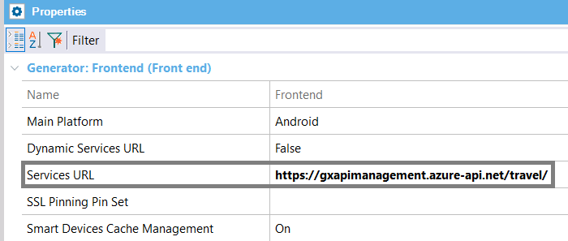
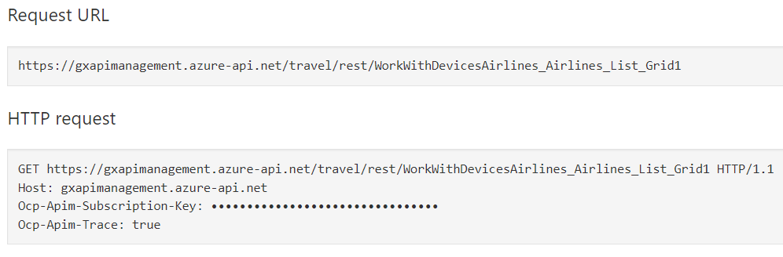
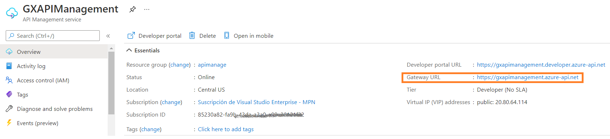

When deploying mobile app services to an Azure Serverless architecture, you use the "Microsoft Azure Serverless (backend services)" deployment target.
This document explains details about the deployment to Azure API Management (APIM), which is optional.
First, note that you have to set the Generate OpenAPI interface property to Yes and OpenAPI version property to either 2.0 or 3.0, and do a rebuild all in the model, previous to deploying to Azure Serverless.
The following error is shown if the property is no set:
"Error: All the objects of the Deployment unit must have Generate OpenAPI Interface property set to Yes. Alternatevely, set to Yes the property at the generator level, and do a rebuild all."
Before going on, read Azure Http-triggered functions.
To deploy to APIM, you need to configure the following deployment properties:
|
APIM service name |
Name of the API Management service instance. |
|
APIM resource group |
Azure API Management resource group. |
|
API Identification |
API revision identifier. It must be unique in the current API Management service instance. |
|
API display name |
Display name of this API. |
|
API backend service URL |
Absolute URL of the backend service implementing this API. It corresponds to the URL given for the Azure function app. E.g: https://MyFunctionApp.azurewebsites.net  |
|
API path |
Relative URL uniquely identifying this API and all of its resource paths within the API Management service instance. E.g: travel |
|
API subscription required |
If true, the API requires a subscription key on requests. The recommended value for services being called from mobile clients is False. |
Consider the following deployment configuration:

With the above settings, the API can be seen as follows in the Azure portal:

To run the app and use the services just deployed, configure the Services URL property as follows:

Note that the URL is the Gateway URL shown in the Azure portal for the APIM service, followed by the API path you configured on deployment.
Then, at runtime, the /rest suffix in the URL is added automatically by the mobile clients to make the calls, as shown in the figure:


For angular front end applications which use Azure serverless for deploying their backend, see How to: Angular front end applications using serverless backend.